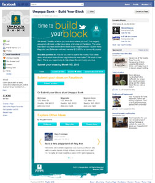
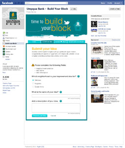
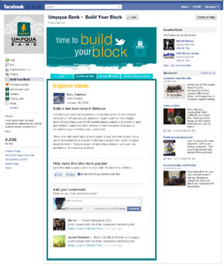

- 
- 
- 
I led the development and architecture of Umpqua Bank's, build-your-block facebook app. The app was designed as a platform for users to submit ideas for community improvements and vote on their favorites, ultimately the 3 winning ideas won $10,000 to implement them. The visual design was by GLG.
Highlights
- Social. Not requiring facebook permissions to like or discuss ideas allowed people to participate without jumping through any hoops. Requiring permissions to submit ideas allowed for authenticity.
- Easy administration. Umpqua administrators could perform all their tasks, such as submitting ideas on behalf of others, seamlessly within the Facebook application -- no admin console required.
- Secure. Logging and easy access to reporting allowed for easy audits to verify votes. Integration with facebook's authentication system ensured a one-person-one-vote rule.
Technologies Used
- CSS3, HTML5, jQuery, Mustache, Facebook API
- Python with Django
- Load-balanced Apache servers